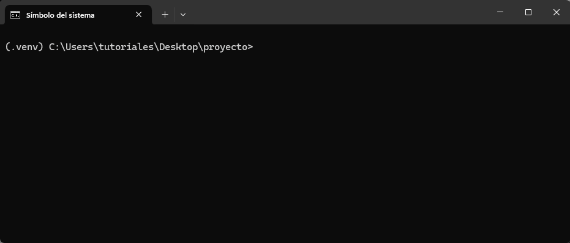

7 - Scripting
Scripts
En programación, un script es un archivo de texto que contiene una secuencia lógica de pasos que se pueden ejecutar para realizar una tarea específica, ya sea simple o compleja. Esta serie de pasos suele expresarse en un lenguaje de scripting, un lenguaje de programación que permite manipular, personalizar y automatizar tareas.
A diferencia de los programas compilados, los scripts suelen interpretarse en tiempo de ejecución. Es decir, un intérprete se encarga de leer, procesar y ejecutar cada instrucción en orden.
En el caso de Python, un script es un archivo con extensión .py que puede automatizar procesos, analizar datos, crear aplicaciones o prácticamente cualquier otra tarea que el lenguaje permita. El intérprete de Python ejecuta el código línea por línea, lo que facilita probar, modificar y reutilizar el programa de manera ágil
Debido a su uso frecuente para desarrollar scripts, Python es conocido también como un lenguaje de scripting, aunque en la práctica su uso sea mucho más amplio.
Script vs módulo
Python es un lenguaje de programación interpretado, y por ello sus programas suelen denominarse scripts. Sin embargo, no siempre es correcto usar este término. Si bien muchos programas en Python consisten en instrucciones destinadas a resolver tareas puntuales, otros programas tienen por objetivo principal implementar herramientas que luego van a ser utilizadas por otros programas.
Un programa de Python puede denominarse script o módulo. El propósito del código en un archivo de texto .py es lo que determina si lo llamamos de una manera o de la otra. Cuando un archivo contiene código ejecutable cuyo fin es realizar una tarea específica, se lo considera script. En cambio, cuando el archivo está diseñado para ser importado y utilizado desde otro programa de Python, se lo denomina módulo.
En síntesis, la principal diferencia entre un módulo y un script es que los módulos almacenan código importable mientras que los scripts contienen código ejecutable.
Script y módulo
Python es un lenguaje tan flexible que un mismo programa puede funcionar como script y como módulo al mismo tiempo. Esto ocurre cuando el archivo define herramientas reutilizables (por ejemplo, funciones o clases) y, además, incluye código que se ejecuta directamente al correrlo desde la línea de comandos.
Para ilustrarlo, consideremos un pequeño programa en Python que solicita una fecha al usuario y luego indica cuántos días faltan para llegar a ella:
calcular_dias.py
from datetime import datetime
def diferencia_dias(fecha_str):
fecha = datetime.strptime(fecha_str, "%Y-%m-%d").date()
hoy = datetime.today().date()
diferencia = (fecha - hoy).days
return diferencia
fecha_str = input("Ingresá una fecha (formato AAAA-MM-DD): ")
diferencia = diferencia_dias(fecha_str)
if diferencia > 0:
print(f"Faltan {diferencia} días para el {fecha_str}.")
elif diferencia == 0:
print("¡La fecha es hoy!")
else:
print(f"Esa fecha ya pasó hace {-diferencia} días.")Debajo se muestra una animación de la ejecución de este script en la terminal:

Ahora, supongamos que queremos importar la función diferencia_dias en otro programa de Python.
Cuando importamos una función del módulo calcular_dias, observamos que Python también ejecuta la parte del programa que solicita una fecha y muestra cuántos días faltan para alcanzarla.
Esto ocurre porque, al importar un módulo (o cualquier objeto definido en él), Python ejecuta todo el código del archivo de principio a fin, sin importar qué elementos en particular estemos importando.
Para evitar este comportamiento no deseado, y permitir que un mismo archivo pueda funcionar tanto como módulo reutilizable como script ejecutable, se encapsula la parte que debe ejecutarse solo al correr el archivo directamente dentro del siguiente bloque:
if __name__ == "__main__":
# código ejecutableCon esta estructura, el código dentro de ese bloque se ejecutará únicamente cuando el archivo se ejecute directamente como programa, y no cuando se lo importe desde otro módulo.
De esta manera, nuestro programa actualizado quedaría así:
calcular_dias.py
from datetime import datetime
def diferencia_dias(fecha_str):
fecha = datetime.strptime(fecha_str, "%Y-%m-%d").date()
hoy = datetime.today().date()
diferencia = (fecha - hoy).days
return diferencia
if __name__ == "__main__":
fecha_str = input("Ingresá una fecha (formato AAAA-MM-DD): ")
diferencia = diferencia_dias(fecha_str)
if diferencia > 0:
print(f"Faltan {diferencia} días para el {fecha_str}.")
elif diferencia == 0:
print("¡La fecha es hoy!")
else:
print(f"Esa fecha ya pasó hace {-diferencia} días.")Ahora, cuando se importa cualquier objeto desde calcular_dias, Python no ejecuta la parte del programa que interactúa con el usuario.
__name__ 🏷️
La variable __name__ es una variable especial que indica el nombre del módulo actual. Cuando un archivo Python se ejecuta directamente, __name__ toma el valor "__main__", lo que indica que es el módulo principal. En cambio, si el archivo se importa como un módulo en otro script, __name__ contendrá el nombre del archivo (sin la extensión .py).
CLIs con argparse
argparse es un módulo de la librería estándar de Python que sirve para crear interfaces de línea de comandos (CLIs, por sus siglas en inglés).
Con este módulo se pueden definir qué argumentos y opciones acepta nuestra programa. Luego, Python se encargará de:
- Leerlos desde la terminal al ejecutar el script.
- Convertirlos al tipo de dato indicado (
int,float,str, etc.). - Validarlos según las reglas definidas.
- Generar un mensaje de ayuda (
--help) sin que tengamos que hacer nada.
Ejemplo: saludos personalizados
El siguiente programa recibe el nombre de una persona como argumento obligatorio y, de manera opcional, la cantidad de veces que se la debe saludar.
import argparse
parser = argparse.ArgumentParser(description="Saluda a una persona")
parser.add_argument("nombre", help="El nombre de la persona") # Argumento posicional
parser.add_argument("--veces", type=int, default=1, help="Cuántas veces saludar") # Argumento nombrado
args = parser.parse_args()
for _ in range(args.veces):
print(f"¡Hola, {args.nombre}!")Luego, en la terminal:
python hola.py Tomás
¡Hola, Tomás!Y si usamos el argumento --veces:
python hola.py Tomás --veces 3
¡Hola, Tomás!
¡Hola, Tomás!
¡Hola, Tomás!La ayuda se puede ver de la siguiente manera:
python hola.py --help
usage: hola.py [-h] [--veces VECES] nombre
Saluda a una persona
positional arguments:
nombre El nombre de la persona
options:
-h, --help show this help message and exit
--veces VECES Cuántas veces saludarSi usamos un valor de tipo erróneo para --veces, obtenemos un error informativo de manera automática:
python hola.py Tomás --veces 3.5
usage: hola.py [-h] [--veces VECES] nombre
hola.py: error: argument --veces: invalid int value: '3.5'input() vs argparse
Tanto input() como ArgumentParser de argparse permiten pasar datos a nuestro script. La diferencia entre ellos es que input() se usa para pedir datos mientras corre el programa, mientras que el módulo argparse se usa apra pedir datos al momento de ejecutar el programa desde al terminal.